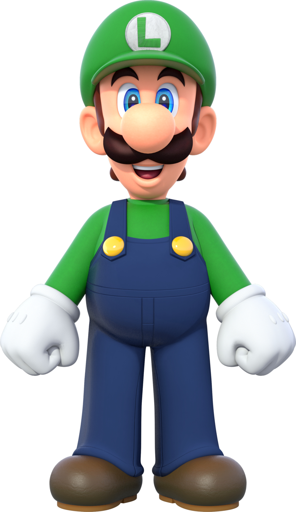

¡Únete a Mario, Luigi, Peach y Toad en su misión para salvar el reino de las hadas en Super Mario 3D World + Bowser’s Fury para Nintendo Switch! Rescata a la princesa hada y a sus amigas, en solitario o con hasta 3 jugadores más, en esta versión mejorada de Super Mario 3D World.
Trailer
Super Mario 3D World + Bowser's Fury nos ofrece en un solo pack dos títulos que comparten una misma base jugable, pero que son independientes el uno del otro, pudiendo acceder a cualquiera de ellos desde el menú principal sin necesidad de tener que desbloquear nada, algo que es muy de agradecer, especialmente de cara aquellos jugadores que quieran saltar directamente al nuevo contenido.
Super Mario 3D World' es equivalente a diversión pura y dura, especialmente si lo jugamos en compañía.
Lo mejor de todo es que el diseño de niveles es un auténtico torrente de creatividad y buenas ideas, bombardeándonos constantemente con nuevas mecánicas y situaciones únicas que convierten cada pantalla en algo exclusivo, diferente al resto y con su propia personalidad. Una auténtica pasada que nos recuerda por qué Mario sigue siendo el principal referente del género 35 años después.
Por supuesto, los controles son una delicia y difícilmente podrían ser más precisos, uno de los pocos puntos en los que sí que se han hecho ajustes y retoques, pues se ha aumentado la velocidad de todos los personajes para darle un ritmo más dinámico y ágil al "plataformeo" que le sienta genial. Y no os penséis que esto hace las cosas más fáciles, ya que esto lo que implica es justo lo contrario al aumentar la exigencia en el manejo de nuestros héroes.
El título es todo un ejercicio de buen diseño de videojuegos.
Personajes Jugables
-
Mario:Un héroe muy completo que derrocha energía. Posee un talento especial para encontrar aventuras y nunca duda en ayudar a quien lo necesite.
-

Luigi: Gracias a su desgarbada figura, el gemelo menor de Mario salta más que cualquier otro personaje. Pero, cuidado, ¡porque también le cuesta más frenar!
-
Peach: Aunque no es tan rápida como los demás, siempre aterriza sana y salva gracias a su salto flotante. Así es capaz de evadir el peligro durante algunos segundos más.
-
Toad: ¡El más rápido de este cuarteto! Toad es una apuesta segura cuando la velocidad es la clave.
Guia
- Inicio Guia
- Soles Felinos
- Fragmentos Felinos
- Jefes
Mas informacion
Amiibos
- Peach Felina
- Mario Felino
- Bowsy
- Bowser
Transformaciones
- Champiñon grande
- Mega
- SuperCampana
- De fuego
- Tanuki
- Boomerang
Mundos
- Mundo 1
- Mundo 2
- Mundo 3
- Mundo 4
- Mundo 5
- Mundo 6
- Mundo Castillo
- Mundo Bowser
- Mundo Estrella
- Mundo Champiñon
- Mundo Flor
- Mundo Corona